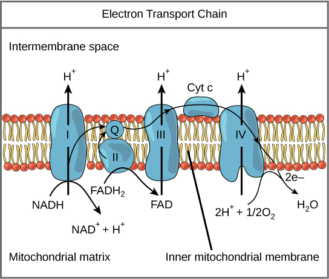

Organic Acids Testing (OAT) & Metabolic Analysis in Ontario

A Biochemical Audit of Your Health. Move Beyond Normal to Optimal.
If you are navigating the exhaustion of chronic burnout, the persistent "cloud" of brain fog, or a mood and energy plateau that hasn't responded to standard care, you don't just need more rest—you need better data. Standard blood work is excellent at identifying disease, but it often misses metabolic dysfunction.
In my virtual naturopathic practice, I use the Organic Acids Test (OAT) as a comprehensive metabolic snapshot. This at-home urine test measures 70+ markers that reveal how your cells are actually producing energy, processing neurotransmitters, and managing oxidative stress. We use this data to identify exactly where your system is stalling and how to restore your foundation.
What Can an OAT Reveal?
Think of the OAT as a look at your cellular machinery. By measuring the metabolic byproducts in your urine, we can assess several critical pillars of your health:
1. Mitochondrial Energy Production
Your mitochondria are the power plants of your cells. If they aren't efficiently converting food into fuel (ATP), you will experience persistent fatigue and metabolic stalls. The OAT identifies specific blocks in the Krebs Cycle, allowing us to target your protocol with precision.

2. Neurotransmitter Metabolism
The OAT provides a window into your brain chemistry by measuring the metabolites of Dopamine, Norepinephrine, and Serotonin. This is foundational for individuals dealing with unexplained anxiety, low motivation, or "brain fog."
3. Fungal & Bacterial Overgrowth
Hidden imbalances in the gut—such as Candida or specific bacterial strains like Clostridia—produce toxins that can cross into the bloodstream and affect your nervous system. The OAT identifies these metabolic signatures that standard stool tests might miss.
4. Detoxification & Oxidative Stress
We measure your levels of Glutathione (your body’s master antioxidant) and other markers of detoxification capacity. This reveals if your system is being overwhelmed by environmental stressors or if your clearing pathways need support.
Why a Strategic Interpretation Matters
An OAT report is dense and complex. As a licensed Naturopathic Doctor with a Master’s Degree, I don't just look at high or low markers in isolation. I perform a Systemic Analysis:
Biochemical Integration: I look at how your energy markers correlate with your neurotransmitters to fully understand why your body is manifesting the symptoms that it is.
Nutrient Signaling: The OAT identifies functional needs for B-vitamins, CoQ10, and antioxidants that are unique to your biology.
The Virtual Advantage: Serving patients across Toronto, Ottawa, and all of Ontario, I provide a seamless process from at-home collection to a deep-dive video consultation where we translate your data into a high-performance roadmap.
Frequently Asked Questions: Organic Acids Testing
Stop Guessing. Start Optimizing Your Foundation.
If you’re ready to move past the "trial and error" of generic supplements and start building a resilient system with a virtual-first, data-driven approach, let’s get to work.